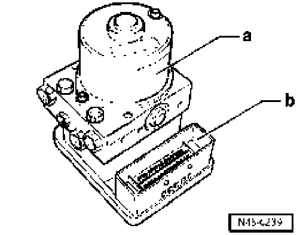
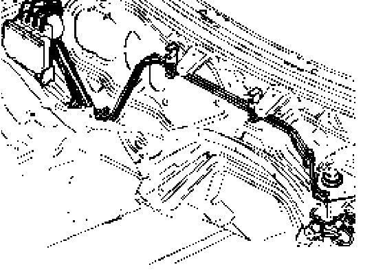

General Notes
General notes on anti-lock braking system (ABS)
Models with ABS Mark 25, only the following version is installed:
^ ABS/EDL/ASR with electronic stabilization program (ABS/EDL/ASR/ESP)
The ABS brake system is divided diagonally. The power assist is affected pneumatically by the vacuum brake booster.
Malfunctions on the ABS influence the brake system and power-assist. A braking behavior change should be checked. When the ABS warning lamp comes on the rear wheels can lock-up early when braking!
Models with ABS Mark 25 do not have a mechanical brake pressure regulator. A specially matched software in the control module controls the rear axle brake pressure regulation.

The hydraulic unit - a - and control module - b - form one component. Separating is only possible when removed.
New control modules via the replacement parts service are not coded and require coding after installation. Go to Code control module using VAS 5051 or VAS 5052 via "Guided fault finding" function.

ABS layout in left-hand drive vehicle.